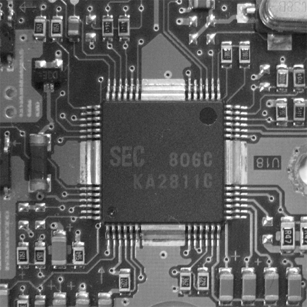
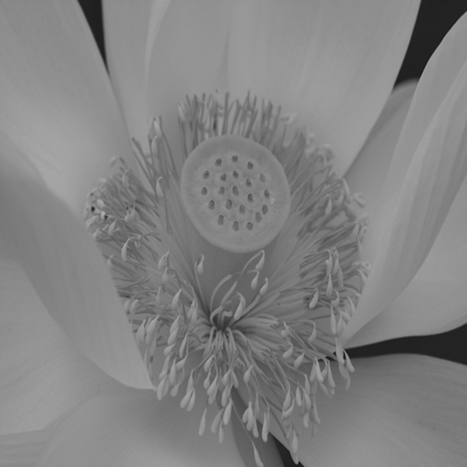
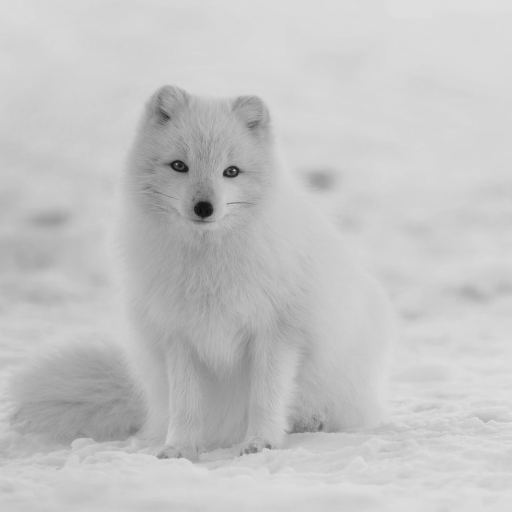

RAW 이미지 처리기
로컬 컴퓨터에서 선택:
프리셋 이미지



흑백 처리 방법 선택
128 기준
중앙값 기준
평균값 기준
히스토그램 탐색 선택
히스토그램 스트래칭
엔드-인 탐색
히스토그램 평활화
화소 영역 처리 선택
엠보싱
샤프닝
평균 블러링
가우시안 블러링
쌍방 필터 블러링
윤곽선 추출
밝기 조절
확대/축소
확대/축소 정수배 선택
8
7
6
5
4
3
2
1
1/2
1/3
1/4
1/5
1/6
1/7
1/8
회전